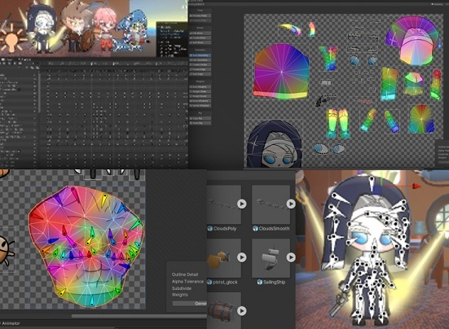

Far Out At Sea
Far Out At Sea
유저가 그린 그림을 AI가 분석해 세력을 결정하는 턴제 전략 게임입니다.
3D 배경과 2D 캐릭터로 애니메이션과 진행 방식을 구현했습니다.

애니메이션
Mechanim 키프레임 작업 생동감 있는 애니메이션
디자인
아기자기한 3D 모델링 직접 제작한 리소스로 디자인 통일성 확보
보조 컨텐츠
사용자가 그린 그림을 In-Game 해적선 또는 해군선의 깃발로 활용
모바일 환경에 최적화된, 직접 제작한 그림판 제공
디자인
URP 그래픽 작업 화려한 비주얼 구현
설계
Figma로 UI/UX를 디자인 후, 틀을 따라 개발했습니다.
머신러닝 AI
유저의 그림을 활용할 수 있는 컨텐츠를 고민했고,
AI와 게임을 결합할 방법을 찾기 위해 노력을 기울였습니다.
(자세한 사항은 포트폴리오 PDF파일에서 확인하여주십시오.)

로직과 자료
스크립트의 Flow-Chart를 제작해 프로젝트의 코드를 디자인했습니다.
캐릭터별 대사와 스킬과 상세 Statistics 를 정의한 다음, CSV 파일로 내보내 필요한 정보를 가져옵니다.